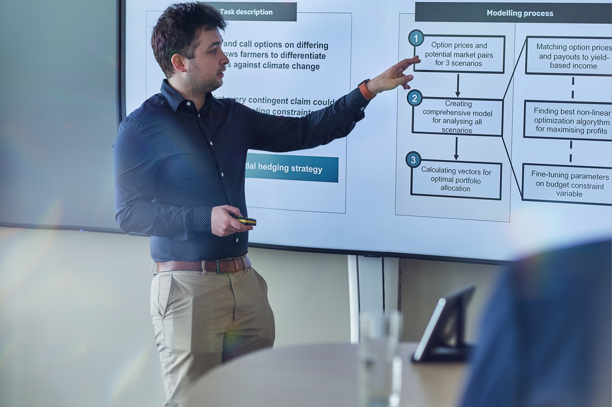

Bálint Mazzag and I participated in the QuantChallenge organized by Morgan Stanley, where we competed against 120 teams. Our hard work and determination paid off as we secured 2nd place at the finals. This post presents our solution to the second task (the final). Our slides are available below.

Task description
In this task, farmers can purchase put and call options on differing strike prices, which allow them to differentiate and hedge risks against climate change. In a perfect market, every contingent claim could be hedged. But the market is not perfect: only limited derivatives are available and farmers can only buy finite options. So we applied an optimal partial hedging strategy to optimise their spending and hedging the risks by improving their balance at given VaR requirements. Given the option prices and the trajectories of the scenarios, we created a comprehensive model to provide an optimal combination of the derivatives.
VaR (value at risk) is a statistical measure used in economics to estimate the potential loss that an investment portfolio or a financial institution may face due to adverse market movements. VaR is expressed as a dollar amount or a percentage of the portfolio’s total value and is calculated based on statistical models that take into account historical market data, volatility, and other risk factors. In our case, the portfolio had to be worth above certain values with 10% and 25% probabilities.
We selected an optimisation strategy based on three different requirements. First, we needed a nonlinear optimisation, since the VaR values that we must satisfy are given thresholds. We considered all the approaches implemented in R’s nloptr package (nonlinear optimization) and found in portfolio optimisation literature. We wanted a derivative-free optimisation process, so we had to forsake the SLSQP method, and based on the initial attempts COBYLA outperformed the ISRES algorithm.